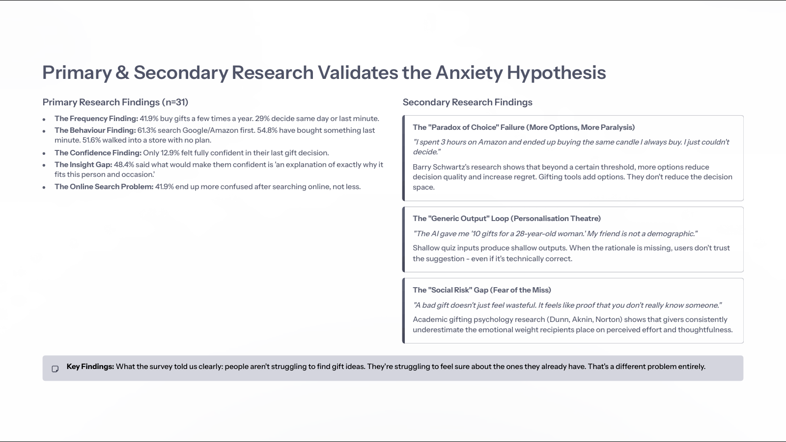
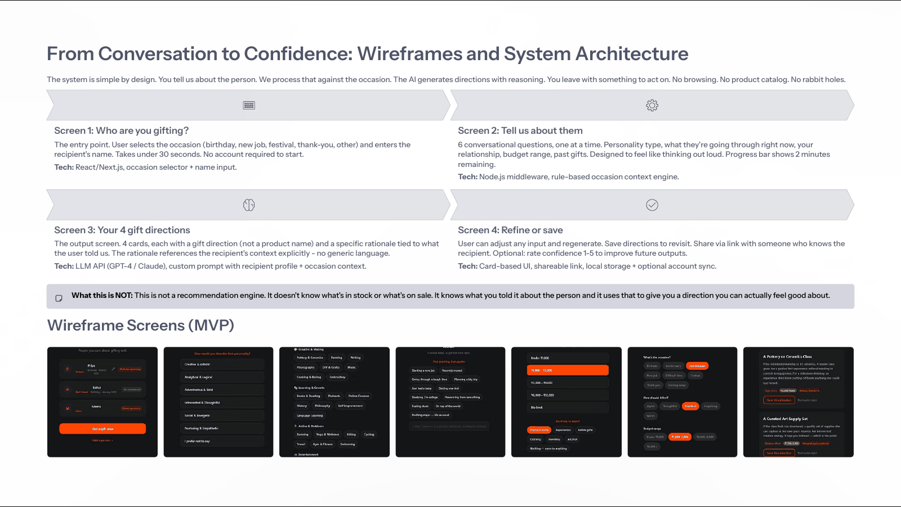
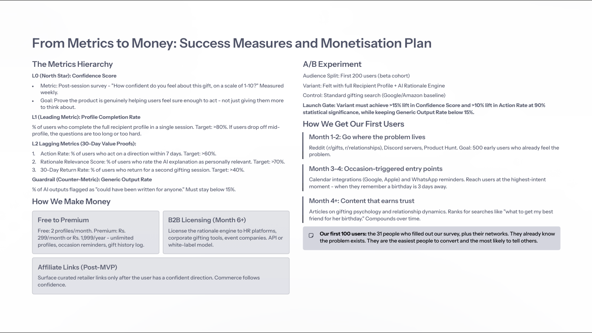

The problem wasn't finding a gift. It was feeling sure.
Gifting tools mostly optimise for discovery: catalogues, wishlists, quizzes and AI-generated lists. But the giver usually knows the recipient. What they struggle with is turning that knowledge into one decision they feel good about.
Move the question from "What should I buy?" to "Why does this fit this person and this occasion?"
Research backed the anxiety hypothesis
The research asked about real past gifting, not hypotheticals. The strongest signal wasn't a lack of ideas. It was low confidence and a wish for reasons.
- 9 of 31 decide on the same day or at the last minute, and 17 of 31 have bought something last minute.
- 19 of 31 start on Google or Amazon, and 13 of 31 came away more confused.
- 15 of 31 said an explanation of why a gift fits the person and occasion would make them confident.

Who it's for: the relationship-conscious gifter
The segment is defined by behaviour, not demographics: people who care what a gift says about the relationship, and feel anxious when they can't turn what they know into a confident choice.
| Pattern | What it looks like |
|---|---|
| The overthinker | Knows the person but doubts the choice. Can spend 2 to 3 hours searching and still want reassurance before checkout. |
| The last-minute defaulter | Runs out of thinking time, goes to a familiar marketplace and buys something safe. |
Both need the same two things: help turning what they know about the recipient into a direction, and a reason they can trust, not just another recommendation.
What to build first: confidence before commerce
The job to be done: "When I'm choosing a gift for someone I care about, I want to understand why a specific gift direction fits this person and this moment, so I can feel confident enough to stop searching and act."
I scored eight candidate features on impact, feasibility, alignment with that job and strength of evidence, each out of 5, and averaged them.
| Feature | Impact | Feasibility | Alignment | Evidence | Score | Decision |
|---|---|---|---|---|---|---|
| Recipient Profile Builder | 5 | 4 | 5 | 5 | 4.75 | MVP |
| AI Gift Rationale Engine | 5 | 4 | 5 | 5 | 4.75 | MVP |
| Occasion Context Layer | 4 | 5 | 4 | 4 | 4.25 | MVP |
| Gift Memory Log | 4 | 3 | 3 | 4 | 3.50 | v1.1 |
| Recipient Feedback Loop | 5 | 2 | 3 | 3 | 3.25 | v1.1 |
| Social Gifting Circle | 4 | 2 | 3 | 3 | 3.00 | v2 |
| Budget Intelligence | 3 | 4 | 2 | 2 | 2.75 | v2 |
| Product Link Integration | 2 | 5 | 1 | 1 | 2.25 | Out of scope |
Product links scored joint highest on feasibility and lowest on alignment and evidence, so I left them out. "Where to buy" only matters once the giver knows what to buy and why.
A short conversation that ends in a reasoned direction
Browsing is replaced by a structured conversation. The product gathers context about the recipient, applies rules for the occasion, sends a structured profile to an LLM and returns gift directions with the reasoning attached.
- Who are you gifting?Pick the occasion and name the recipient. Designed to start in under 30 seconds.
- Tell us about themSix questions, one at a time: personality, current context, relationship, occasion, budget and past gifts.
- Your four gift directionsEach one explains why it fits the recipient, the occasion and the relationship.
- Refine or saveRegenerate, save or share, and optionally rate confidence to improve future results.

Measure confidence formed, not sessions completed
This is a concept and prototype, so these are proposed targets to validate, not results.
| Metric | Type | How it's measured | Target |
|---|---|---|---|
| Confidence score | North Star | Post-session rating: how confident do you feel about this gift? | 8+ / 10 |
| Profile completion | Leading | Share of users who finish the six questions. A drop means the conversation is too long or too hard. | > 80% |
| Action within 7 days | Lagging | Users who act on a direction within a week. | > 60% |
| Return within 30 days | Lagging | Users who come back for another occasion. | > 40% |
| Generic output rate | Guardrail | Directions users say could have been written for anyone. | < 15% |

Trust is the product constraint
| Risk | Mitigation |
|---|---|
| The reasoning feels generic | Every rationale has to reference something specific the user said. |
| People don't gift often | Occasion reminders, and a B2B use case later to raise frequency. |
| Weak results on unusual occasions | Roll out across common occasions first, then expand. |
Commerce follows confidence. The product earns the right to show where to buy only after it has helped the user decide what to buy and why.